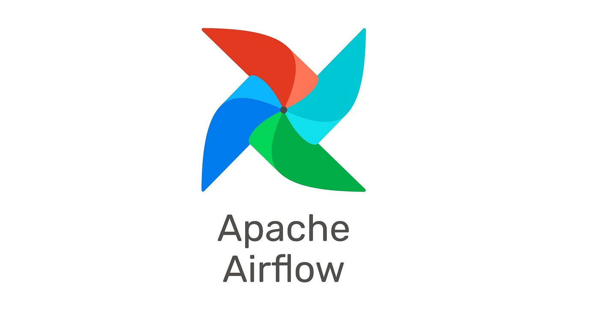
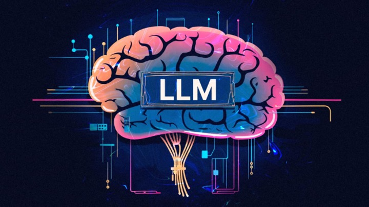
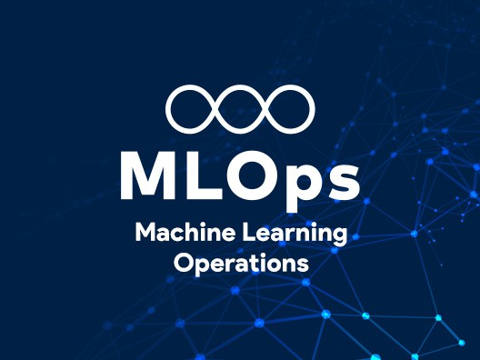

Projects
Data Engineering

Data Flow Automation
Automated ETL pipeline using Apache Airflow and Python
ETL · Apache Airflow · SQL · PythonNYC Taxi Dataset Analysis on GCP
Analyzed NYC taxi data using Apache Spark on GCP, showcasing Spark job structuring and DataFrame API proficiency for insight extraction
Spark · GCP
Healthcare Management System Using AWS Cloud
Designed and deployed a secure, multi-tier cloud architecture on AWS
AWS · System Design · Security · ProductionAI & Machine Learning
ML-Powered Industrialized Walmart Sales Prediction System
End-to-end ML pipeline with data ingestion, validation, deployment via FastAPI, and real-time visualization using Streamlit and Grafana
Python · Machine Learning · Docker ·Airflow · EDA
Generative AI and NLP
Custom Story Generation using Fine-Tuned LLMs
LLM · NLP · GenAI
Churn Prediction and Model Tracking Using MLFlow
Machine Learning in production
MLOps · MLFlow · PyTorchAI Based Multilingual Chat Application
AI-Powered Multilingual Chat Application.
Chatbot · Machine Learning · Model Serving